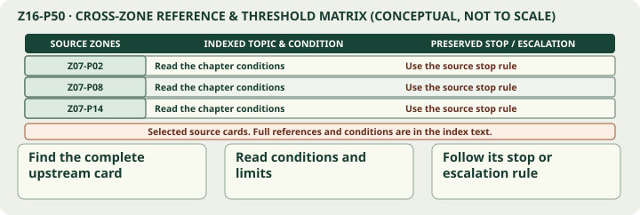

Z16-P50 · Field reference atlas · New manuscript
Trapping Law, AFWA Welfare, Pet Leashing and Reporting Index
Preserve Z07 zero-actionable-construction boundaries while indexing trapping statutes, ESA, nongame protections, pet safety, and DNR TIP reporting.
When it applies · Bystander, hiker, pet-owner, and conservation-ethics orientation around regulated trapping.
Equipment · Full offline reader (Z07, Z06), primary zone cards, and local emergency and agency references.

Actions
- Maintain Z07 strict scope: cover wildlife ecology, AFWA BMP welfare principles, conceptual hazard recognition, statutory restrictions, and authority referral—ZERO actionable trap, snare construction or placement instructions (Z07-P01, Z07-P08..P10).[A06, L01, L02, L11]
- Protect companion dogs and children on open multi-use forests and WMAs during autumn, winter trapping seasons via short fixed leashes (at or below 6 ft), staying clear of culverts, flagged stakes, cubbies, and scent piles (Z07-P13..P17).[A06, L07, L10, L12]
- Never touch, spring, or tamper with discovered hardware (stored spring crush hazard + statutory penalties, Z07-P11, Z07-P19) and never attempt barehanded release of trapped wildlife; record safe distant GPS coordinates and call MN DNR TIP (1-800-652-9093) or licensed rehabilitators (Z07-P20, Z07-P21).[A06, L06, L09]
Failure recognition · Touching unfamiliar spring bars, letting dogs roam off-leash near WMA culverts, or attempting barehanded wildlife release causes severe crush, bite, or rabies injuries.[L06, L09, L10, L11]
Verify · Zero construction specs, short-leash pet control, hands-off hardware rules, and DNR, TIP reporting remain intact.[L01, L06, L09, L10]
Stop or change course · Stop approaching any unfamiliar metal hardware, staked wire, or distressed animal; back away and notify authorities.[L06, L09, L11]
Evidence and editorial notes
- A06 · Minnesota DNR · Minnesota Fishing Regulations (Current web edition)
- Section: Lawful harvest, trapping-hazard, and regulatory cross-reference · Conditions: Indexing Z06 harvest, Z07 trap-hazard avoidance, and agency reporting lines
Support: Regulatory quick-references always pair species/season pointers with jurisdiction, authority lookup, check date, and explicit rejection of emergency exemptions.
Limitations: Index pointers expire with annual rule cycles and require current agency verification. · Conflicting evidence: None noted.
Editorial note: Preserves Z06/Z07 legal authority bounds in Z16. · Specialist reviewer: Wildlife legal reviewer
Primary source · checked 2026-11-25 - L01 · Minnesota DNR · Minnesota Trapping Regulations and Fur Harvest Rules (Current web edition)
- Section: Minnesota trapping licensing, seasons, and statutory limits · Conditions: Any regulated trapping activity or legal reference in Minnesota
Support: Trapping is strictly regulated by license, season, species, trap type, set location, check intervals, and landowner permission; unauthorized trapping is illegal.
Limitations: Emergency narratives never create an exemption to set traps or snares; verify current statute and DNR handbook every season. · Conflicting evidence: None noted.
Editorial note: Primary Z07 legal boundary. · Specialist reviewer: Wildlife law and DNR enforcement reviewer
Primary source · checked 2026-11-25 - L02 · Association of Fish & Wildlife Agencies · Best Management Practices for Trapping and Furbearer Welfare (Current web edition)
- Section: AFWA Best Management Practices for animal welfare and selectivity · Conditions: Evaluating trapping principles, welfare, and non-target risk
Support: AFWA BMPs evaluate regulated devices on animal welfare, efficiency, selectivity, user safety, and practicality through scientific testing.
Limitations: Improvised traps and snares lack scientific welfare testing and selectivity controls, causing severe injury and non-target capture. · Conflicting evidence: None noted.
Editorial note: Anchors Z07 welfare & conceptual classification without building instructions. · Specialist reviewer: Wildlife welfare scientist
Primary source · checked 2026-11-25 - L06 · Minnesota DNR · Injured, Orphaned, or Trapped Wildlife Reporting (Current web edition)
- Section: Reporting injured, orphaned, or accidentally trapped wildlife · Conditions: Discovering a trapped or injured wild animal in the field
Support: Maintain safe distance to avoid bites, rabies, and stress to the animal; note GPS/location and contact a Conservation Officer or licensed wildlife rehabilitator.
Limitations: Never attempt barehanded release of distressed carnivores, raptors, or large mammals. · Conflicting evidence: None noted.
Editorial note: Establishes Z07 incidental-capture reporting protocol. · Specialist reviewer: Wildlife rehabilitator and DNR officer
Primary source · checked 2026-11-25 - L07 · Minnesota DNR · Minnesota State Park Rules and Resource Collecting Restrictions (Current web edition)
- Section: Public park, trail, and recreation-area trapping prohibitions · Conditions: Minnesota State Parks, campgrounds, and restricted public trails
Support: Trapping is generally prohibited in Minnesota State Parks, SNAs, and designated high-use public recreation corridors.
Limitations: Public multiple-use forests and WMAs may permit lawful seasonal trapping; leash pets and check posted notices. · Conflicting evidence: None noted.
Editorial note: Clarifies where bystanders/pets may encounter lawful sets. · Specialist reviewer: Public-lands manager
Primary source · checked 2026-11-25 - L09 · Minnesota DNR · Turn In Poachers (TIP) and Conservation Officer Reporting (Current web edition)
- Section: Reporting illegal, unmarked, or abandoned traps and snares · Conditions: Encountering suspected unlawful, out-of-season, or unsafe sets
Support: Do not touch, spring, or steal equipment; photograph from a safe distance with location coordinates and report to MN DNR TIP or local law enforcement.
Limitations: Tampering with lawful traps can be illegal and risks severe hand injury from stored spring energy. · Conflicting evidence: None noted.
Editorial note: Protects bystanders from injury and legal liability. · Specialist reviewer: Conservation enforcement reviewer
Primary source · checked 2026-11-25 - L10 · Minnesota DNR · Minnesota Trapping Regulations and Fur Harvest Rules (Current web edition)
- Section: Human and pet hazard recognition around lawful trapping areas · Conditions: Walking dogs or hiking in open public-use lands during furbearer seasons
Support: Keep dogs on short leashes on open multi-use lands during autumn/winter trapping seasons, avoid bait piles and shoreline culverts, and carry vet contact info.
Limitations: Body-gripping and cable devices present rapid fatal risk to unleashed pets; prevention via leashing is far safer than emergency release. · Conflicting evidence: None noted.
Editorial note: Core Z07 bystander & pet hazard prevention. · Specialist reviewer: Veterinary and outdoor-safety reviewer
Primary source · checked 2026-11-25 - L11 · Association of Fish & Wildlife Agencies · Best Management Practices for Trapping and Furbearer Welfare (Current web edition)
- Section: Conceptual classification of historic vs regulated capture categories · Conditions: Educational overview of mechanical hazard types without construction specs
Support: Historical and regulated devices fall into restraining (foothold, cage, cable restraint) and killing (body-grip) hazard classes with distinct spring-energy risks.
Limitations: Conceptual awareness supports hazard recognition only and must never include trigger dimensions, wire specs, or placement instructions. · Conflicting evidence: None noted.
Editorial note: Enforces Z07 no-actionable-construction editorial boundary. · Specialist reviewer: Safety and wildlife ethics reviewer
Primary source · checked 2026-11-25 - L12 · Minnesota DNR · Living with Black Bears and Encounter Safety (Current web edition)
- Section: Attractant, bait-site, and carrion encounter avoidance · Conditions: Field travel near carrion, bait stations, or water-edge cubbies
Support: Strong odors, feathers, flagged stakes, or disturbed shoreline funnels can indicate carrion, bear feeding sites, or active regulated sets.
Limitations: Route wide around suspect attractants and keep companions and pets close. · Conflicting evidence: None noted.
Editorial note: Hazard-recognition field cue for Z07. · Specialist reviewer: Wildlife safety specialist
Primary source · checked 2026-11-25
Source lineage · New manuscript (Z16 P20 regulated-equipment index) · Classification · New manuscript.